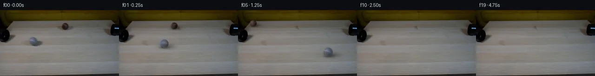

![首帧]()

Round 00
2026-11-05T18:58:33.101735+00:00像素候选变化代码 +206/−0inspection 更新
pixels ff9ea0738f67f573 · code 1bca22754caa7383
查看本轮 generate.py 真实 diff
--- previous/generate.py
+++ current/generate.py
@@ -0,0 +1,206 @@
+"""Local photographic pixel reconstruction and analytic rolling-sphere continuation."""
+from pathlib import Path
+import json, re, base64
+import numpy as np
+from PIL import Image, ImageDraw
+from scipy.ndimage import gaussian_filter1d, map_coordinates, gaussian_filter
+from artifact_io import save
+
+ROOT = Path(__file__).resolve().parent
+SOURCE = np.asarray(Image.open(ROOT/'first_frame.png').convert('RGB'))
+H,W = SOURCE.shape[:2]
+Y,X = np.mgrid[:H,:W].astype(float)
+BALLS = [
+ dict(name='grey',cx=71.7,cy=68.2,r=9.3,vx=100.,vy=19.,decel=4.,donor=62,
+ left=(40,53),right=(106,119), body=(71.7,68.2,12.4,11.7), shadow=(82.,72.,19.5,9.3)),
+ dict(name='brown',cx=140.1,cy=35.5,r=7.4,vx=-88.,vy=-6.,decel=3.,donor=-60,
+ left=(108,123),right=(173,188),body=(140.1,35.5,10.8,10.1),shadow=(149.,38.8,18.5,7.8)),
+]
+LIGHT = np.array([-.42,-.57,.706]); LIGHT /= np.linalg.norm(LIGHT)
+
+def ellipse_alpha(e):
+ cx,cy,rx,ry=e
+ q=np.sqrt(((X-cx)/rx)**2+((Y-cy)/ry)**2)
+ a=np.clip((1.10-q)/.13,0,1)
+ return a*a*(3-2*a)
+
+def make_plate():
+ plate=SOURCE.astype(float).copy()
+ total=np.zeros((H,W))
+ for b in BALLS:
+ mask=np.maximum(ellipse_alpha(b['body']),ellipse_alpha(b['shadow']))
+ total=np.maximum(total,mask)
+ l0,l1=b['left'];r0,r1=b['right']
+ lc=SOURCE[:,l0:l1].astype(float).mean(axis=1)
+ rc=SOURCE[:,r0:r1].astype(float).mean(axis=1)
+ weight=np.clip((X-(l0+l1-1)/2)/((r0+r1-l0-l1)/2),0,1)
+ rowtrend=lc[:,None,:]*(1-weight[:,:,None])+rc[:,None,:]*weight[:,:,None]
+ donor_x=np.clip(np.arange(W)+b['donor'],0,W-1)
+ donor=SOURCE[:,donor_x].astype(float)
+ # Preserve horizontal grain and subtle high-frequency photographic texture.
+ texture=donor-gaussian_filter1d(donor,3.0,axis=1,mode='nearest')
+ fill=np.clip(rowtrend+.68*texture,0,255)
+ plate=plate*(1-mask[:,:,None])+fill*mask[:,:,None]
+ return plate,total
+
+PLATE, RESTORE_MASK = make_plate()
+
+# Surface colors come from the initial balls. Back surfaces are inferred by a
+# mirrored extension of the observed colors, never from a model/reference.
+for b in BALLS:
+ u=(X-b['cx'])/b['r'];v=(Y-b['cy'])/b['r']
+ rr=u*u+v*v
+ z=np.sqrt(np.maximum(0,1-rr))
+ shade=.49+.51*np.maximum(0,LIGHT[0]*u+LIGHT[1]*v+LIGHT[2]*z)
+ interior=rr<.69
+ b['base_albedo']=np.median((SOURCE.astype(float)/shade[:,:,None])[interior],axis=0)
+ # A small photographic smoothing matches the low-resolution input lens.
+ b['photo']=gaussian_filter(SOURCE.astype(float),sigma=(.25,.25,0))
+
+
+def state(b,t):
+ speed=abs(b['vx'])
+ distance=speed*t-.5*b['decel']*t*t
+ direction=1 if b['vx']>0 else -1
+ cx=b['cx']+direction*distance
+ cy=b['cy']+(b['vy']/speed)*distance
+ scale=1+.004*(cy-b['cy'])
+ radius=b['r']*scale
+ angle=distance*np.hypot(1,b['vy']/speed)/(b['r']*(1+.5*(scale-1)))
+ return cx,cy,radius,angle
+
+
+def draw_ball(canvas,b,t):
+ cx,cy,r,angle=state(b,t)
+ if cx+r*3<0 or cx-r*3>W: return canvas
+ # Ground shadow under the ball, plus a longer soft cast shadow to lower right.
+ sx=cx+r*.65; sy=cy+r*.65
+ cast=.36*np.exp(-.5*(((X-sx)/(r*1.15))**2+((Y-sy)/(r*.40))**2))
+ contact=.25*np.exp(-.5*(((X-cx)/(r*.63))**2+((Y-(cy+r*.89))/(r*.19))**2))
+ shadow=np.minimum(.61,cast+contact)
+ shadow[shadow<.003]=0
+ canvas=canvas*(1-shadow[:,:,None])
+ # Supersample the photographic sphere to retain fractional pixel silhouettes.
+ ss=3
+ x0=max(0,int(np.floor(cx-r-2)));x1=min(W,int(np.ceil(cx+r+3)))
+ y0=max(0,int(np.floor(cy-r-2)));y1=min(H,int(np.ceil(cy+r+3)))
+ if x1<=x0 or y1<=y0:return canvas
… diff truncated; 119 more lines …